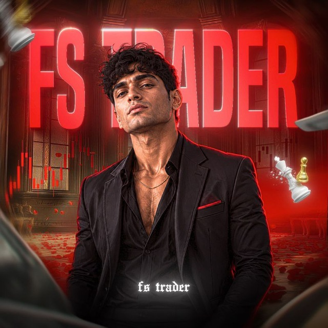

Market & price action
Explore candles, market structure and the reasoning behind trading setups.

FS TRADERTHE TRADING COMMUNITY Inside the channelBinary trading ko seriously seekhna hai? Join FS Trader for market discussions, chart education and a more disciplined approach.
Free channel access · For serious learners · 18+
Binary trading focused
Education-led discussions
A discipline-first mindset
A focused space for people interested in binary trading—not quick-money promises.
Explore candles, market structure and the reasoning behind trading setups.
Follow educational content and session updates shared in the Telegram channel.
Keep the focus on patience, preparation and understanding potential losses.
Bas ek quick check. Apna interest select karo, phir Telegram par FS Trader join karo.
This community is for learning and discussion. It does not promise income, fixed profits or loss recovery.
Yes. This invitation gives you access to the free FS Trader Telegram channel. You do not need to make a payment on this page.
Yes, if you are 18 or older and want to learn about binary trading. Start with educational content and understand the risks before considering any real-money trading.
No. No setup, signal or strategy guarantees a profit. Binary trading involves a high risk of loss, including your entire trading amount. Content is educational and is not personalized financial advice.